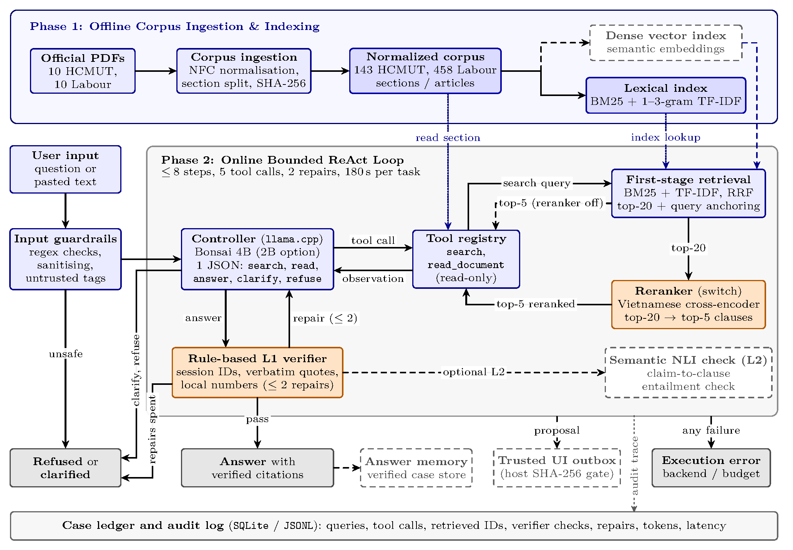
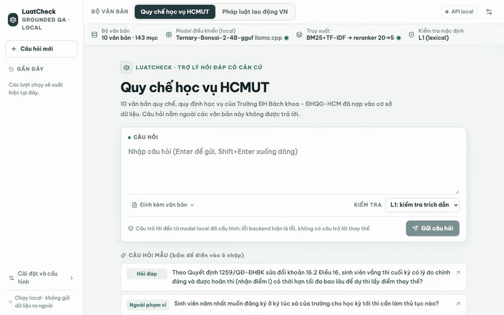
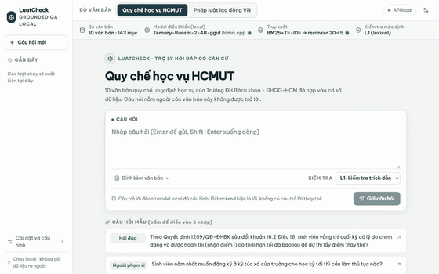
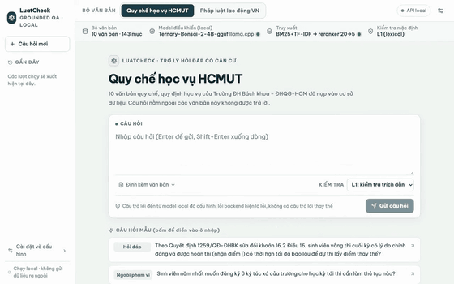
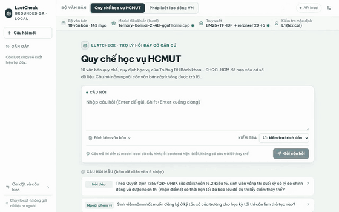

Retrieve
Weighted RRF over SQLite FTS5 and EmbeddingGemma-2 768-d vectors (0.75 / 0.25), top-20 candidates rescored by a Vietnamese cross-encoder to the top 5 sections.
Local-first · Vietnamese legal RAG · HCMUT D2
LuatCheck answers only from a loaded collection of Vietnamese regulations. It quotes the exact clause, verifies every quotation in deterministic code, and refuses when the sources do not support an answer.
Static evidence page. The model runs locally; this page replays five stored traces from the real stack.
01 — Recorded runs
Five runs executed by the local stack and stored in SQLite: two verified answers, one repair-then-pass, one refusal after failed repairs, and one prompt injection blocked before any model call. Timings, tokens, tool results and verifier outcomes are read from the trace — nothing is re-simulated.
Loading traces…
Select a run
The inspector shows the query, the tool trace, the verifier decision, the final answer and its citations.
Recorded 25–28 Oct 2026, UTC. Model timings are per-call wall time from the trace; totals include retrieval, verification and queueing. Raw traces: runs.json (verbatim fields, no edits).
02 — Pipeline
The controller is a bounded ReAct loop written directly in Python: at most 8 steps, 5 tool calls, 2 verification repairs and 180 s per question. Its action schema exposes only search, read_document, answer, clarify and refuse.

Weighted RRF over SQLite FTS5 and EmbeddingGemma-2 768-d vectors (0.75 / 0.25), top-20 candidates rescored by a Vietnamese cross-encoder to the top 5 sections.
The controller must open a section before it can cite it. Every cited article_id has to be returned by search or read_document in the same run.
Constrained JSON decoding guarantees one valid action per step. Budgets are hard limits: no silent fallback, no fabricated answer after a backend failure.
A rule-based L1 gate checks provenance, verbatim quotes and claim-local numbers before return. On failure the controller gets the closest source passage and at most two repairs.
The verifier is code, not a model
5 cannot match inside 15.Soft diagnostic: content-token overlap below 0.50 logs a warning. Spec: CITATION_VERIFIER_L1.md.
03 — Measured, not claimed
Two self-built, hash-locked 50-question benchmarks — HCMUT academic regulations and Vietnamese labour law — each with 40 single-record, 5 two-record and 5 out-of-scope questions. Three configurations, three seeds, two diagnostic baselines.
| Benchmark | Configuration | Judge-Strict | Unverified citation leak | Citation-audited strict |
|---|---|---|---|---|
| HCMUT regulations | No verifier | 70.0 [61–79] | 25.6% (31/121) | 55.3% (83/150) |
| Verifier (with repair) | 64.0 [53–75] | 0.0% (0/109) | 64.0% (96/150) | |
| Verifier + reranker (full) | 60.7 [50–71] | 0.0% (0/109) | 60.7% (91/150) | |
| Labour law | No verifier | 62.0 [52–72] | 28.0% (37/132) | 51.3% (77/150) |
| Verifier (with repair) | 52.7 [43–63] | 0.0% (0/111) | 52.7% (79/150) | |
| Verifier + reranker (full) | 56.7 [47–67] | 0.0% (0/108) | 56.7% (85/150) |
Swipe or scroll horizontally to see all columns →
Without the verifier, 25.6–28.0% of 4B answers carry a quote that does not exist in the PDF, an unretrieved section ID, or a number copied from an adjacent clause. The L1 gate rejects those drafts, feeds back the closest source passage, and repairs 17–20 drafts per benchmark before refusing.
A blind human audit of 60 outputs shows 96.7% agreement (κ = 0.93) on HCMUT and 90.0% (κ = 0.80) on labour law. Offline judging across both 545-trial runs cost USD 2.17 in total; local inference itself costs USD 0.
The verifier trades some raw judge credit for zero unsupported citations. It is not a claim of general legal correctness: harder unseen multi-hop and paraphrased benchmarks are scheduled for D3. Full metric definitions: BENCHMARKS_AND_METRICS.md.
04 — Recorded demo
Screen recordings of the local Web UI with the Bonsai 4B controller. The GIFs are stored assets, not a live model.




05 — Scope
Run the real thing
The full system is self-hosted. The Web UI, retrieval stack, verifier and model servers start as separate local processes; Docker Compose is included in the repository.
# once: build llama.cpp fork + fetch GGUF weights
make prism-setup
# terminal 1: Bonsai 4B controller on :8081
make demo-model-server
# terminal 2: Vietnamese reranker on :8082
make rerank-server-mac
# terminal 3: FastAPI + React UI on :8000
make demo-web-gemma2Latency on the recorded Mac: 33.0 s median / 86 s p95 (HCMUT) and 29.8 s / 72 s (labour law) with the 4B controller; the 2B controller runs at 13.3 s / 30 s and 14.6 s / 28 s. Sources: github.com/tuandung222/LuatCheck-D2.